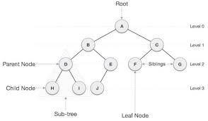

트리
트리(tree)의 개념
트리는 노드로 이루어진 자료 구조입니다.
1. 트리는 하나의 루트 노드를 갖습니다.
2. 루트 노드는 0개 이상의 자식 노드를 갖고 있습니다.
3. 그 자식 노드 또한 0개 이상의 자식 노드를 갖고 있고, 이는 반복적으로 정의됩니다.
-노드(node)들과 노드들을 연결하는 간선(edge)들로 구성되어 있습니다.
-트리에는 사이클(cycle)이 존재할 수 없습니다.
-노드들은 특정 순서로 나열될 수도 있고 그럴 수 없을 수도 있습니다.
-각 노드는 부모 노드로의 연결이 있을 수도 있고 없을 수도 있습니다.
-각 노드는 어떤 자료형으로도 표현 가능합니다.
-비선형 자료구조로 계층적 관계를 표현합니다. Ex) 디렉터리 구조, 조직도
-그래프의 한 종류
-사이클(cycle)이 없는 하나의 연결 그래프(Connected Graph)
-또는 DAG(Directed Acyclic Graph, 방향성이 있는 비순환 그래프)의 한 종류 이다.
트리(tree)와 관련된 용어
-루트 노드(root node): 부모가 없는 노드, 트리는 하나의 루트 노드만을 가짐
-단말 노드(leaf node): 자식이 없는 노드, ‘말단 노드’ 또는 ‘잎 노드’라고도 부름
-내부(internal) 노드: 단말 노드가 아닌 노드
-간선(edge): 노드를 연결하는 선 (link, branch 라고도 부름)
-형제(sibling): 같은 부모를 가지는 노드
-노드의 크기(size): 자신을 포함한 모든 자손 노드의 개수
-노드의 깊이(depth): 루트에서 어떤 노드에 도달하기 위해 거쳐야 하는 간선의 수
-노드의 레벨(level): 트리의 특정 깊이를 가지는 노드의 집합
-노드의 차수(degree): 하위 트리 개수 / 간선 수 (degree) = 각 노드가 지닌 가지의 수
-트리의 차수(degree of tree): 트리의 최대 차수
-트리의 높이(height): 루트 노드에서 가장 깊숙히 있는 노드의 깊이
트리(tree)의 특징
-그래프의 한 종류입니다. ‘최소 연결 트리’ 라고도 불립니다.
-트리는 계층 모델 입니다.
-트리는 DAG(Directed Acyclic Graphs, 방향성이 있는 비순환 그래프)의 한 종류입니다.
-loop나 circuit이 없습니다. 당연히 self-loop도 없습니다.
-즉, 사이클이 없습니다.
-노드가 N개인 트리는 항상 N-1개의 간선(edge)을 가집니다.
-즉, 간선은 항상 (정점의 개수 - 1) 만큼을 가집니다.
-루트에서 어떤 노드로 가는 경로는 유일합니다.
-임의의 두 노드 간의 경로도 유일합니다. 즉, 두 개의 정점 사이에 반드시 1개의 경로만을 가집니다.
-한 개의 루트 노드만이 존재하며 모든 자식 노드는 한 개의 부모 노드만을 가집니다.
-부모 자식 관계이므로 흐름은 top-bottom 아니면 bottom-top으로 이루어집니다.
-순회는 Pre-order, In-order 아니면 Post-order로 이루어집니다. 이 3가지 모두 DFS/BFS 안에 있습니다.
-트리는 이진 트리, 이진 탐색 트리, 균형 트리(AVL 트리, red-black 트리), 이진 힙(최대힙, 최소힙) 등이 있습니다.